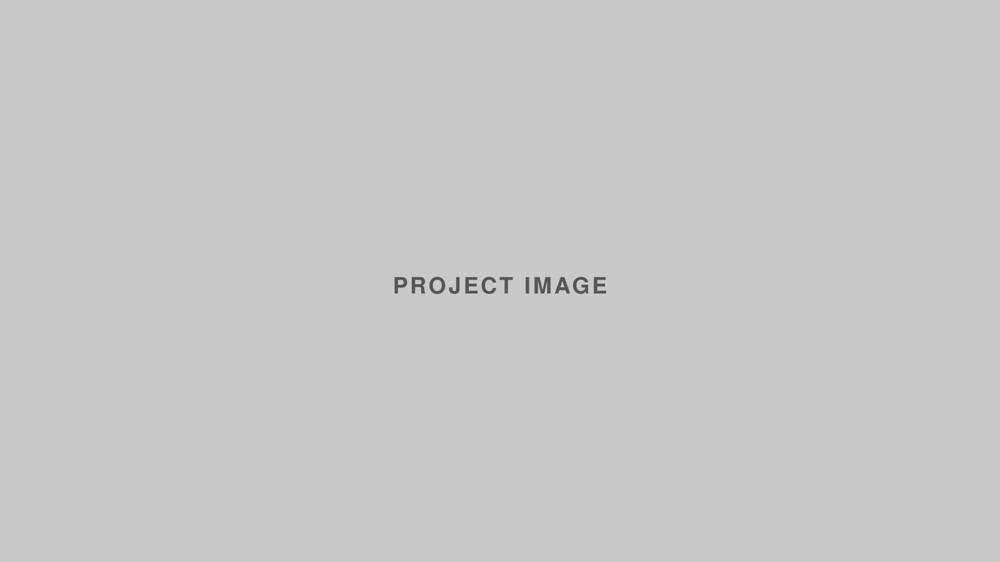

Benefits Admin Portal
From
Ambiguity
→
To
Clarity
Explore how an analytics portal helps build efficiency for benefits administrators.
Read the case study →

Ji-Sook Yim
Product design leader & mentor
15+ years · Research, product & strategy · Mentor
From
To
How I work
Industries
Startups · E-commerce · B2B · B2B2C · Agency
Languages
Interests
From
Ambiguity
To
Clarity
Explore how an analytics portal helps build efficiency for benefits administrators.
Read the case study →
“I had the privilege of recruiting and managing Ji-Sook for several years, and during that time, she proved herself to be an extraordinary design leader, the kind who raises the bar for everyone around her. She is the first person I think of when the most complex business needs or design challenges arise. She researches deeply and designs the conditions that make great work possible. Her ability to build and scale design culture created lasting impact well beyond her immediate team.”

Mike Altier
VP, Product Design
“As her team operations partner, I had to fight off product managers and business stakeholders who constantly wanted to work with her on every one of their projects. She built the reputation of being Design Lead "John Wick," as her focus and determination in taking on any problem resulted in a well-thought, thorough strategic approach. Her direct reports frequently cited her passion for learning impacted their growth and was a top reason they loved working with her.”

Elliott Smith
Director, Product Operations
“Ji-Sook is one of the most reliable and strategic design leaders I've collaborated with and managed. Her attention to detail and ability to make all stakeholders feel heard while structuring experiences is a skill that's hard to find. I could focus on other areas knowing that the platforms under her leadership were consistently achieving their goals. Beyond delivering results, she genuinely cares about nurturing design craft and helping designers grow.”
Karla Rosales
Director, Product Design
“Ji-Sook has the uncommon ability to balance strategic thinking with hands-on execution and she has the drive to move between those levels to push the UX forward. Equally impressive was her proactive mindset. She didn't wait for problems to arise; instead, she identified opportunities for improvement early on and took the initiative, whether it was optimizing design processes within technical limitations, leading workshops, or mentoring junior designers.”

Brad Poole
Director, User Research
“Ji-Sook consistently elevated cross-functional discussions by articulating clear, well-reasoned perspectives and helping the team make informed trade-offs aligned with business goals and value realization. Her work directly improved client satisfaction compared to our legacy experience, especially as she reconciled a wide range of user personas—from deep power users to high-level casual users.”

Ross Evan
VP, Data & Analytics
“She has a rare ability to turn scattered ideas into clear, actionable strategies that align teams and drive business outcomes. Her inclusive, thoughtful style fosters a safe environment for sharing ideas and challenging assumptions. Ji-Sook builds strong rapport across stakeholders and cross-functional teams and knows when to pull teams out of the weeds to refocus on the core problem.”
Deborah Ortega
Director, Product Management